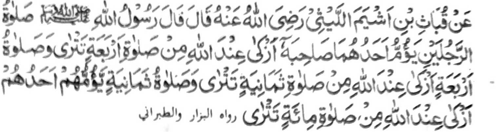

Miyakathitayan ko Qobath Bin Ashyam Al-Laithi (Radhiallaho 'Anho) a pitharo iyan a pitharo o Rasulollah (Sallallaho 'Alaihi Wasallam), "So Sambayang o dowa a mama a piyag-imam o isa kiran so ped iyan na taralebi ko Allah a di so Sambayang o pat katao a mizisibaya Zambayang, go so Sambayang o pat katao a manga mama a miyag-imam o isa kiran na taralebi ko Allah a di so Sambayang o walo kataoa mizisibaya Zambayang. go so Sambayang o walo katao a manga mama a miyag-imam o isa kiran na taralebi ko Allah a di so Sambayang o magatos a mama a mizisibaya Zambayang.''
Si-i ko isa a Hadith na miya-aloy ron, "So mala a Barajoma na taralebi ko Allah a di so maito a Barajoma." Aden a manga tao a aya panarima iran na di phakabinasa opama ka Barajoma siran sa maito ko manga walay ran o di na si-i ko obay o manga tinda iran. Ribata-i, sabap sa paganay ron na miyapapas ko tao so balas o kazambayang sa Masjid go ika dowa na, miyapapas siran ko kapiya o kaped ko mala a Barajoma. Saden sa kala o Barajoma na kapiya niyan si-i ko Allah. Opama ka aya antap tano na so kakowa-a ko kasoso-at o Allah, na ino tano di zowa-a so okit-okit a pekhababaya-an Niyan. Miya-aloy sa Hadith a ‘‘So Allah na masoso-at ko kapekha-ilaya Niyan ko telo a nganin: so sa-ap o manga barasimba a gi-i zambayang sa Barajoma, go so tao a ititindeg iyan so Sambayang a Tahajjud si-i ko tena-tenao a gagawi-i, go so tao a gi-i makim-bono-ai sa lalan ko Allah."